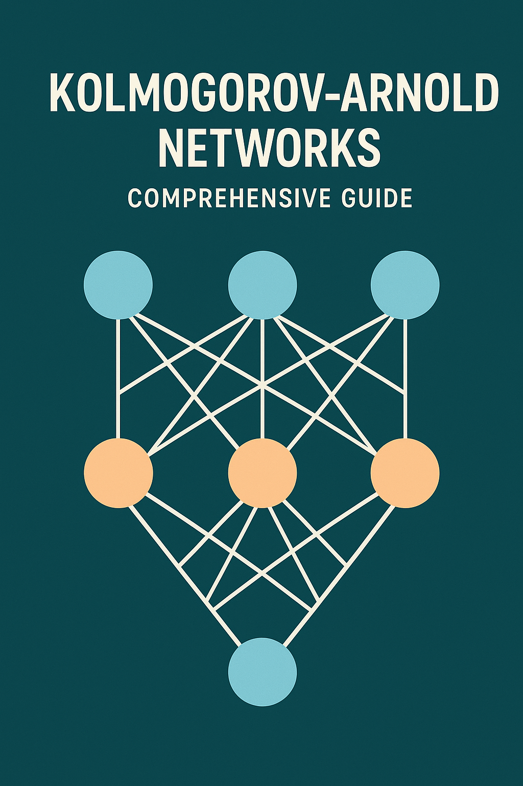

Kolmogorov-Arnold Networks: Revolutionizing Neural Architecture Design

Introduction
Kolmogorov-Arnold Networks (KANs) represent a paradigm shift in neural network architecture design, moving away from the traditional Multi-Layer Perceptron (MLP) approach that has dominated machine learning for decades. Named after mathematicians Andrey Kolmogorov and Vladimir Arnold, these networks are based on the Kolmogorov-Arnold representation theorem, which provides a mathematical foundation for representing multivariate continuous functions.
Unlike traditional neural networks that place fixed activation functions at nodes (neurons), KANs place learnable activation functions on edges (weights). This fundamental architectural change offers several advantages, including better interpretability, higher accuracy with fewer parameters, and improved generalization capabilities.
Mathematical Foundation: The Kolmogorov-Arnold Theorem
The Kolmogorov-Arnold representation theorem, proven in 1957, states that every multivariate continuous function can be represented as a composition and superposition of continuous functions of a single variable. Mathematically, for any continuous function \(f: [0,1]^n \rightarrow \mathbb{R}\) , there exist continuous functions \(\phi_{q,p}: \mathbb{R} \rightarrow \mathbb{R}\) such that:
\[ f(x_1, x_2, \ldots, x_n) = \sum_{q=0}^{2n} \Phi_q\left( \sum_{p=1}^{n} \phi_{q,p}(x_p) \right) \]
This theorem provides the theoretical foundation for KANs, suggesting that complex multivariate functions can be decomposed into simpler univariate functions arranged in a specific hierarchical structure.
Architecture Overview
Traditional MLPs vs KANs
Traditional MLPs: - Fixed activation functions (ReLU, sigmoid, tanh) at nodes - Linear transformations on edges (weights and biases) - Learning occurs through weight optimization - Limited interpretability due to distributed representations
Kolmogorov-Arnold Networks: - Learnable activation functions on edges - No traditional linear weights - Each edge contains a univariate function (typically B-splines) - Nodes perform simple summation operations - Enhanced interpretability through edge function visualization
KAN Layer Structure
A single KAN layer transforms an input vector of dimension n_in to an output vector of dimension n_out. Each connection between input and output nodes contains a learnable univariate function, typically parameterized using B-splines.
The transformation can be expressed as: \[ y_j = \sum_{i=1}^{n_{\text{in}}} \phi_{i,j}(x_i) \]
Where \(\phi_{i,j}\) represents the learnable function on the edge connecting input i to output j.
Key Components and Implementation
B-Spline Parameterization
KANs typically use B-splines to parameterize the learnable functions on edges. B-splines offer several advantages:
- Smoothness: Provide continuous derivatives up to a specified order
- Local Support: Changes in one region don’t affect distant regions
- Flexibility: Can approximate a wide variety of functions
- Computational Efficiency: Enable efficient computation and differentiation
Grid Structure
The B-splines are defined over a grid of control points. Key parameters include:
- Grid Size: Number of intervals in the spline grid
- Spline Order: Determines smoothness (typically cubic, k=3)
- Grid Range: Input domain coverage for the splines
Residual Connections
Modern KAN implementations often include residual connections to improve training stability and enable deeper networks. These connections add a linear component to each edge function:
\[ \phi_{i,j}(x) = \text{spline\_function}(x) + \text{linear\_function}(x) \]
Training Process
Forward Pass
- Input Processing: Input features are fed to the first layer
- Edge Function Evaluation: Each edge computes its learnable function
- Node Summation: Output nodes sum contributions from all incoming edges
- Layer Propagation: Process repeats through subsequent layers
Backward Pass
Training KANs requires computing gradients with respect to: - Spline Coefficients: Control points of B-spline functions - Grid Points: Locations of spline knots (in adaptive variants) - Scaling Parameters: Normalization factors for inputs/outputs
Optimization Challenges
- Non-convexity: Multiple local minima in the loss landscape
- Grid Adaptation: Dynamically adjusting spline grids during training
- Regularization: Preventing overfitting in high-capacity edge functions
Advantages of KANs
Enhanced Interpretability
KANs offer superior interpretability compared to traditional MLPs:
- Function Visualization: Edge functions can be plotted and analyzed
- Feature Attribution: Direct observation of how inputs transform through the network
- Symbolic Regression: Potential for discovering analytical expressions
Parameter Efficiency
Despite their flexibility, KANs often achieve better performance with fewer parameters:
- Targeted Learning: Functions are learned where needed (on edges)
- Shared Complexity: Similar transformations can be learned across different edges
- Adaptive Complexity: Grid refinement allows dynamic complexity adjustment
Better Generalization
KANs demonstrate improved generalization capabilities:
- Inductive Bias: Architecture naturally incorporates smooth function assumptions
- Regularization: B-spline smoothness acts as implicit regularization
- Feature Learning: Automatic discovery of relevant transformations
Applications and Use Cases
Scientific Computing
KANs excel in scientific applications where interpretability is crucial:
- Physics Modeling: Discovering governing equations from data
- Material Science: Property prediction with interpretable relationships
- Climate Modeling: Understanding complex environmental interactions
Function Approximation
Natural fit for problems requiring accurate function approximation:
- Regression Tasks: Continuous function learning with high accuracy
- Time Series: Modeling temporal dependencies with interpretable components
- Control Systems: Learning control policies with explainable behavior
Symbolic Regression
KANs can facilitate symbolic regression tasks:
- Equation Discovery: Finding analytical expressions for data relationships
- Scientific Discovery: Uncovering natural laws from experimental data
- Feature Engineering: Automatic discovery of useful feature transformations
Implementation Considerations
Computational Complexity
Memory Requirements: - B-spline coefficients storage - Grid point management - Intermediate activation storage
Computational Cost: - Spline evaluation overhead - Grid adaptation algorithms - Gradient computation complexity
Hyperparameter Tuning
Critical hyperparameters for KANs:
- Grid Size: Balance between expressiveness and computational cost
- Spline Order: Trade-off between smoothness and flexibility
- Network Depth: Number of KAN layers
- Width: Number of nodes per layer
Software Implementation
Popular KAN implementations:
- PyKAN: Official implementation with comprehensive features
- TensorFlow/PyTorch: Custom implementations and third-party libraries
- JAX: High-performance implementations for research
Current Limitations and Challenges
Scalability Issues
- Memory Overhead: Higher memory requirements compared to MLPs
- Training Time: Longer training due to complex function optimization
- Large-Scale Applications: Challenges in scaling to very large datasets
Theoretical Gaps
- Approximation Theory: Limited theoretical understanding of approximation capabilities
- Optimization Landscape: Incomplete analysis of loss surface properties
- Generalization Bounds: Lack of theoretical generalization guarantees
Practical Considerations
- Implementation Complexity: More complex to implement than standard MLPs
- Debugging Difficulty: Harder to diagnose training issues
- Limited Tooling: Fewer established best practices and tools
Recent Developments and Research Directions
Architectural Innovations
Multi-dimensional KANs: Extensions to handle tensor inputs directly Convolutional KANs: Integration with convolutional architectures Recurrent KANs: Application to sequential data processing
Optimization Improvements
Adaptive Grids: Dynamic grid refinement during training Regularization Techniques: Novel approaches to prevent overfitting Training Algorithms: Specialized optimizers for KAN training
Application Expansions
Computer Vision: Exploring KANs for image processing tasks Natural Language Processing: Investigating applications in text analysis Reinforcement Learning: Using KANs for policy and value function approximation
Comparison with Other Architectures
KANs vs MLPs
| Aspect | KANs | MLPs |
|---|---|---|
| Activation Location | Edges | Nodes |
| Interpretability | High | Low |
| Parameter Efficiency | Often Better | Standard |
| Training Complexity | Higher | Lower |
| Computational Cost | Higher | Lower |
KANs vs Transformers
While Transformers excel in sequence modeling, KANs offer advantages in:
- Interpretability: Clear function visualization
- Scientific Applications: Natural fit for physics-based problems
- Small Data Regimes: Better performance with limited training data
KANs vs Decision Trees
Both offer interpretability, but differ in:
- Function Types: Continuous vs. piecewise constant
- Expressiveness: Higher capacity in KANs
- Training: Gradient-based vs. greedy splitting
Future Outlook
Emerging Trends
Hybrid Architectures: Combining KANs with other neural network types Automated Design: Using neural architecture search for KAN optimization Hardware Acceleration: Specialized hardware for efficient KAN computation
Research Opportunities
Theoretical Foundations: Developing rigorous theoretical frameworks Scalability Solutions: Addressing computational and memory challenges Domain-Specific Variants: Tailoring KANs for specific application domains
Industry Adoption
Scientific Software: Integration into computational science tools Interpretable AI: Applications requiring explainable machine learning Edge Computing: Optimized implementations for resource-constrained environments
Conclusion
Kolmogorov-Arnold Networks represent a significant advancement in neural network architecture design, offering a compelling alternative to traditional MLPs. Their foundation in mathematical theory, combined with enhanced interpretability and parameter efficiency, makes them particularly valuable for scientific computing and applications requiring explainable AI.
While challenges remain in terms of computational complexity and scalability, ongoing research continues to address these limitations. As the field matures, KANs are likely to find increased adoption in domains where interpretability and mathematical rigor are paramount.
The future of KANs looks promising, with active research communities working on theoretical foundations, practical implementations, and novel applications. As our understanding of these networks deepens and computational tools improve, KANs may well become a standard tool in the machine learning practitioner’s toolkit.
References and Further Reading
- Original KAN Paper: “KAN: Kolmogorov-Arnold Networks” (Liu et al., 2024)
- Kolmogorov-Arnold Representation Theorem: Original mathematical foundations
- B-Spline Theory: Mathematical background for function parameterization
- Scientific Computing Applications: Domain-specific KAN implementations
- Interpretable Machine Learning: Broader context for explainable AI methods
This article provides a comprehensive introduction to Kolmogorov-Arnold Networks. For the latest developments and implementations, readers are encouraged to follow recent research publications and open-source projects in the field.